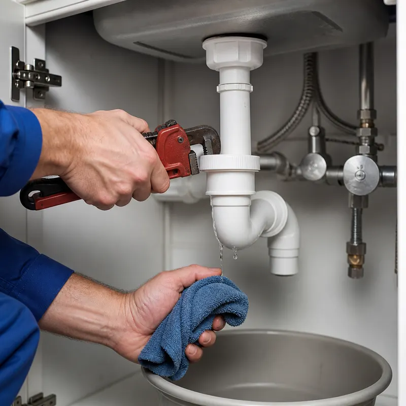

Прочистка засора в Тюмени
Вода уходит медленно или не уходит совсем. Мастер приезжает с инструментом, оценивает, где затор, называет цену и только потом чистит механическим способом.
Вызвать мастера или позвонить: +7 999 548-57-02Цены из прайса
| Засор в раковине | 1 500–3 000 ₽ |
| Засор в унитазе | 2 000–4 000 ₽ |
| Прочистка стояка канализации на этаже | 4 000–7 000 ₽ |
Материалы и сантехнику в цену не включаем. Точную стоимость мастер называет на осмотре, до начала работ. Рассчитать смету

Когда пора вызывать мастера
- Вода в раковине или ванне уходит всё медленнее.
- Из слива пахнет канализацией, а в трубе булькает.
- Унитаз после смыва наполняется почти до края.
- Вода поднимается сразу в нескольких точках: это может быть затор в стояке.
Как проходит прочистка
- Вы описываете проблему и район, мы перезваниваем за 5–10 минут.
- Мастер приезжает, осматривает слив и называет стоимость.
- После вашего «да» он прочищает засор механическим способом.
- В конце проверяет слив: вода должна уходить свободно.
От чего зависит цена
- Где засор: раковина, унитаз или стояк. Стояк на этаже самый сложный случай.
- Насколько плотный затор и что его вызвало.
- Есть ли доступ к ревизии и сифону.
Частые вопросы
Можно ли вызвать мастера в день обращения?
Да, при свободном окне мастер приезжает в тот же день. Срочные засоры лучше обсуждать по телефону +7 999 548-57-02.
Сколько стоит прочистка стояка?
Прочистка стояка на этаже в прайсе стоит 4 000–7 000 ₽. Точную сумму мастер называет на осмотре, до начала работ.
Выезд платный?
Диагностика в прайсе от 0 до 1 500 ₽, а при заказе работ первичный осмотр и выезд бесплатные.
Нужен сантехник в Тюмени?
Оставьте номер, мастер перезвонит за 5–10 минут и назовёт ориентир по цене.
Оставить заявку